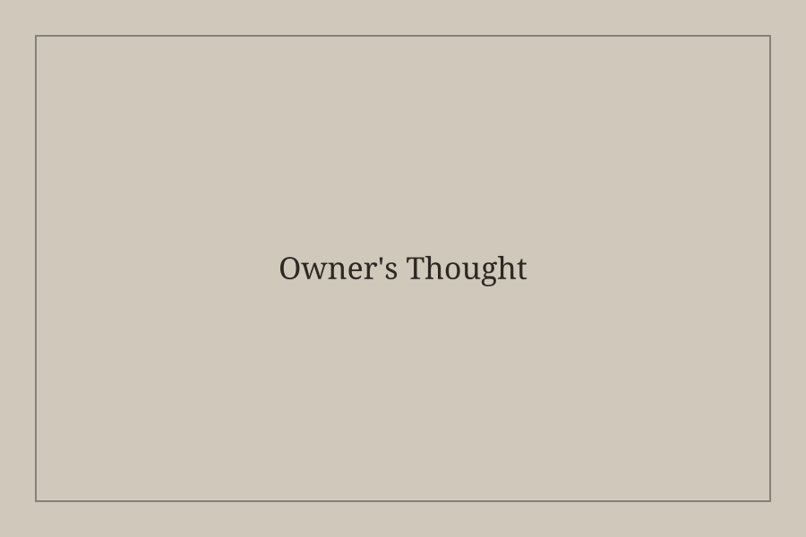

コーヒーへのこだわり
オーナー自らが焙煎した、深煎り中心の珈琲豆を使用しています。
喫茶 綴ルについて

Owner's Thought
喫茶 綴ルは、深煎り珈琲と本を通じて、日常から少し離れた静かな時間を提供する喫茶店です。 忙しさの中で散らばった思考を整え、自分の言葉を取り戻す場所でありたいと考えています。
オーナー自らが焙煎した、深煎り中心の珈琲豆を使用しています。
ゆるやかにつながりながらも、一人ひとりが本と向き合える場所を目指しています。
木の温もりと柔らかな照明により、静かで落ち着いた空間をつくっています。